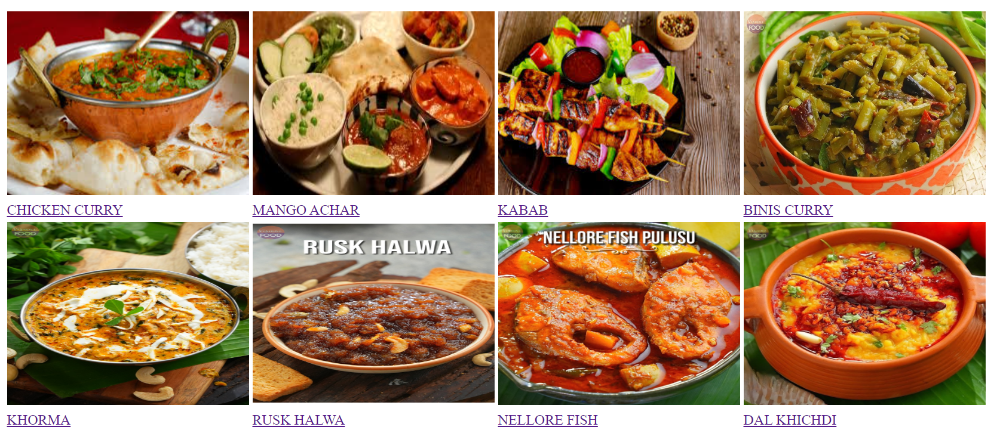

Ingredients
- 300 gms String Beans
- 3 tbsp Oil
- 1 tsp Mustard Seeds (Rai)
- ½ tsp Cumin (Zeera)
- ⅛ tsp Fenugreek Seeds (Methi)
- 1 tsp Black Gram (Urad Dal)
- 2 Dry Chillies
- ½ cup Onion (Chopped)
- 2 Green chillies
- 2 sprigs Curry Leaves
- Salt (To taste)
- ½ tbsp Chilli Powder
- ½ cup Tamarind Juice (extracted from Tamarind the size of a lemon)
- 1 tbsp Jaggery
- Kothmir (Coriander Leaves) - A few
- 2 tbsp Roasted Sesame (Til)